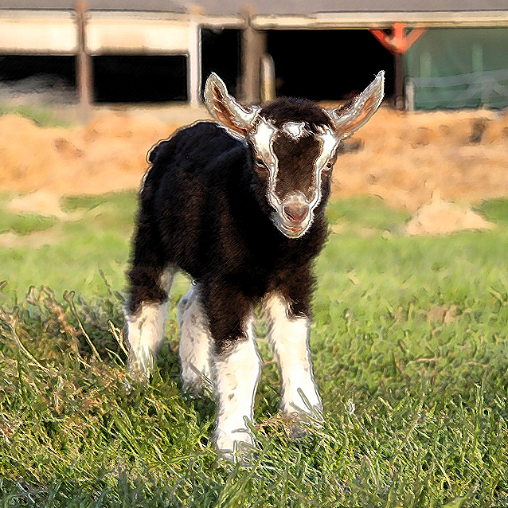

Reviews

“Bear (my furbaby) & I have done two photoshoots with Bonnie and each time we had so much fun and got some amazing pictures! Bonnie made not only me, but Bear feel comfortable and her work shows how much she loves what she does and how much she loves our furbabies! Bonnie is the best in the business and we can't wait to work with her again!”
-Jessica Dormster
“From start to finish, the whole Perfect Pet Pics experience was great. Bonnie was a true professional who obviously loves what she does. Awesome and creative job at capturing my baby bunny, Hopper, in all his glory in fab locations. Excellent communication the whole way through and the pics are truly wonderful!”
-Rick Stevens
“Bonnie did a photoshoot for my two dogs and one cat this weekend and we were blown away with her service! First off, the pictures were amazing and really highlighted my individual pet's personalities. Secondly, she was very sweet and gentle with my pets and somehow figured out how to make them all pose! I cannot recommend her enough!”
-Phil Lancaster
My name is Bonnie Barksdale, owner of Perfect Pet Pics. It was my passion to start my very own pet photography business from my home studio in Statesboro, Georgia. I am currently accommodating four to five photo sessions a month through my business. I offer photography sessions anywhere within a 100 mile radius of Statesboro or at my home studio. I prefer photographing out of the clients home, as your pet will be more calm and comfortable taking pictures. I donate 10% of all of my sales towards my local Humane Society for fostering expenses for animals before they are adopted.
For more information or any inquiries on pricing, check out our pricing page!